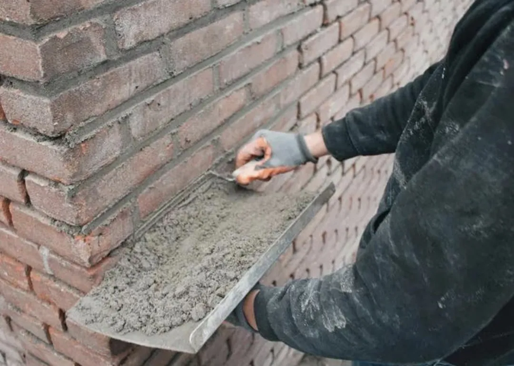
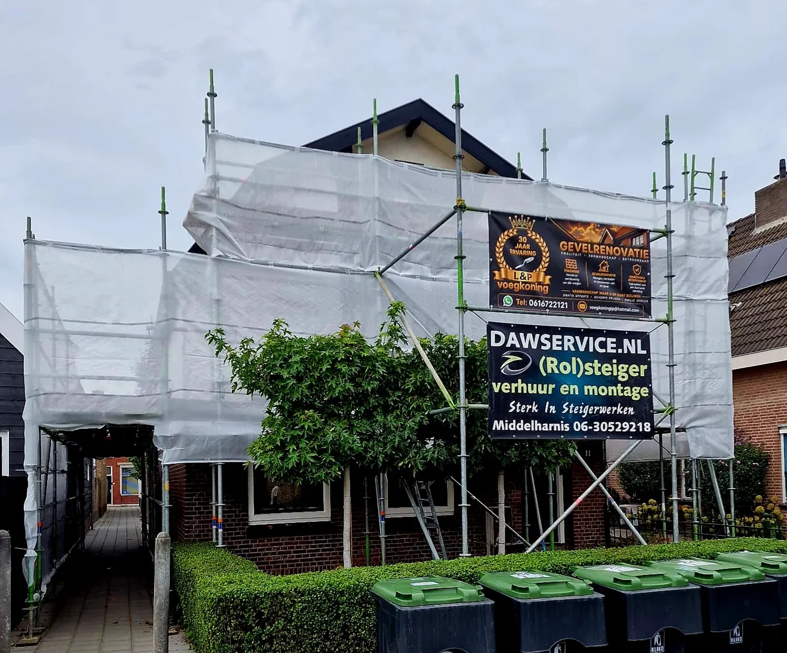
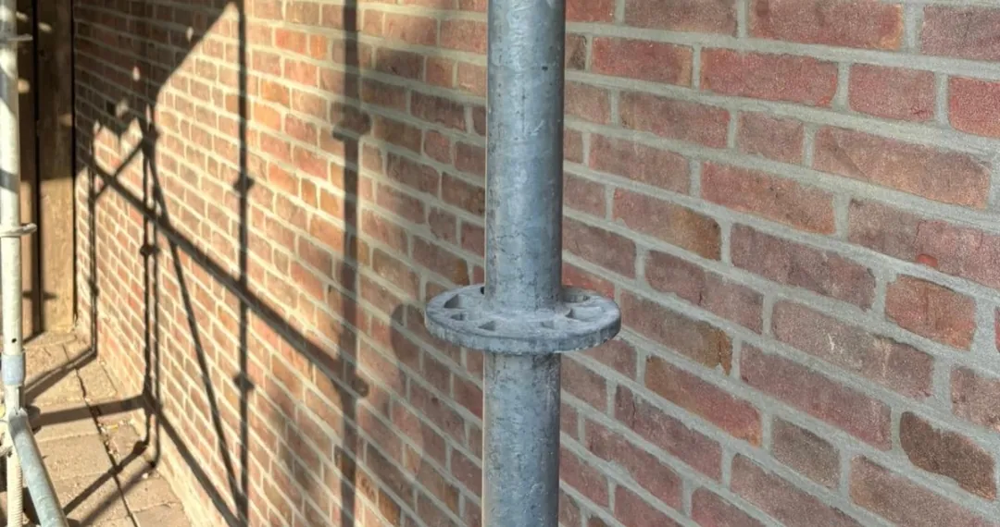
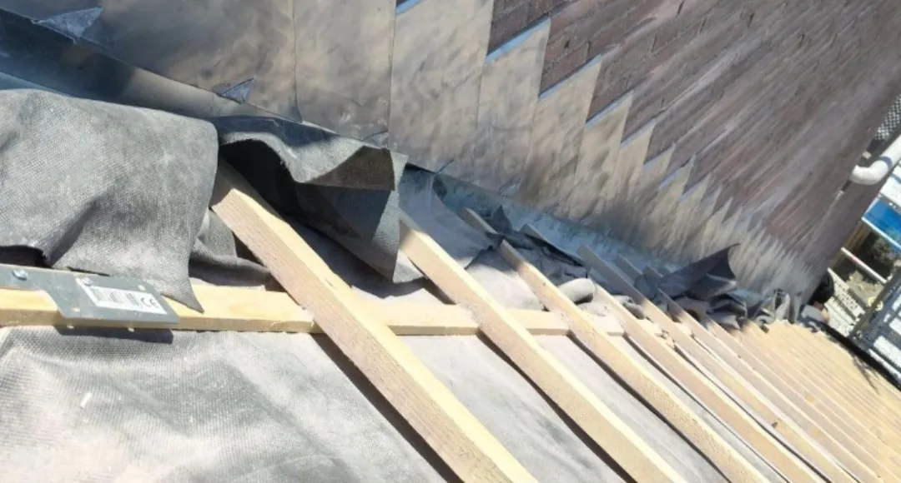
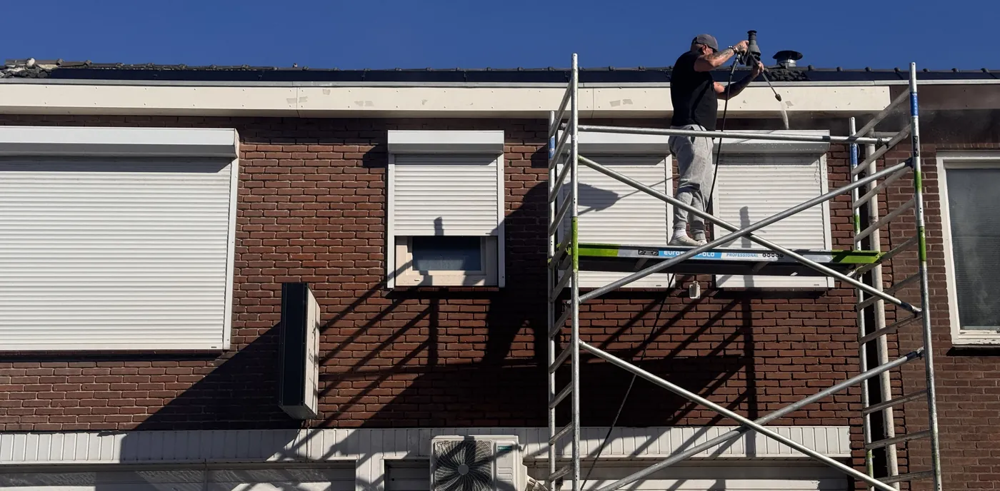

Wat wij voor uw gevel doen
Bij ons kunt u terecht voor gevelrenovatie van A tot Z, van voegwerk tot stucwerk aan de buitengevel. Twijfelt u of wij iets voor u kunnen doen? Neem gerust contact op.
Voegwerk
Voegwerk is het visitekaartje van uw gevel en tegelijk de laag die uw metselwerk waterdicht houdt. Zitten de voegen los, zijn ze uitgesleten of ontbreekt er her en der een stuk, dan krijgt vocht vrij spel. Wij haken het oude voegwerk uit tot op de juiste diepte en vullen het opnieuw, met een mortel die qua kleur, korrel en hardheid aansluit op uw bestaande werk.
Bij een snijvoeg werken we de voeg strak en diep in voor een scherp lijnenspel. Bij een knipvoeg strijken we de voeg gelijk met het steenoppervlak, wat een rustiger, vlakker gevelbeeld geeft. Welke van de twee past, hangt af van uw steensoort en de uitstraling die u zoekt.
- Uithakken oud voegwerk
- Nieuw voegwerk aanbrengen
- Snijvoeg
- Knipvoeg
- Kleur- en structuurmatch op bestaand werk
- Ook bij monumentale en oudere panden

Gevelrenovatie
Bij een gevelrenovatie pakken we niet alleen wat u ziet, maar ook wat eronder zit. We beginnen met een inspectie: waar komt het vocht vandaan, welke stenen zijn poreus geworden, welke scheuren zijn oppervlakkig en welke lopen door in het binnenblad? Op basis daarvan bepalen we de volgorde van het werk.
Daarna volgt het herstel in lagen: scheuren openzetten en vullen, aangetaste stenen vervangen door exemplaren die qua maat en hardheid passen, het voegwerk vernieuwen en tot slot de gevel reinigen. Zo komt de gevel terug in de staat waarin hij hoort te zijn — en blijft hij daar langer.
- Gevelherstel
- Scheurherstel
- Steenvervanging
- Volledige renovatie van voor-, zij- en achtergevel
- Waterdicht afwerken

Impregneren
Impregneren is het aanbrengen van een onzichtbare, dampopen bescherming in de buitenste laag van uw steen. Regenwater parelt eraf, terwijl vocht dat al in de muur zit er nog steeds uit kan. Dat is precies het verschil met een dichte coating: die sluit de gevel af en veroorzaakt op termijn juist vochtschade.
Het resultaat is een gevel die minder water opneemt, minder snel vuil wordt en beter bestand is tegen vorst. Vooral bij oudere, poreuze steen en bij gevels op het westen of noorden is dat een groot verschil in levensduur.
- Waterafstotende bescherming
- Vochtproblemen voorkomen
- Minder snel vervuiling
- Vorst- en zoutbestendiger
- Langere levensduur gevel
- Dampopen — geen vochtopsluiting

Gevelherstel
Beschadigde stenen, open scheuren en loszittend metselwerk lossen we op voordat ze erger worden. We vervangen stenen die poreus, gescheurd of verweerd zijn door exemplaren die in maat, kleur en hardheid bij de rest van de gevel passen, en metselen ze in met dezelfde mortel als het omringende werk.
Scheuren pakken we bij de oorzaak. Een scheur die blijft doorgroeien vult zichzelf niet, hoe netjes je hem ook dichtstopt: eerst bepalen we of het zettings- of temperatuurscheuren zijn, en pas daarna herstellen we. Waar nodig werken we met wapening of een spouwconstructie.
Ook schoorstenen krijgen veel weer te verduren. Losse voegen, verweerde stenen en scheuren in de schoorsteen herstellen we vakkundig; met onze eigen autohoogwerker kunnen we daar snel en veilig bij.
- Steenvervanging en inmetselen
- Scheurherstel
- Herstel van loszittend metselwerk
- Aanpakken van de oorzaak
- Herstel van schoorstenen
- Onderhoudsadvies per gevel

Zandstralen & gevelreiniging
Een gevel die groen uitslaat of grauw is geworden van roet en vliegvuil, krijgt met de juiste reiniging zijn oorspronkelijke kleur terug. Zandstralen is daarbij een krachtige methode, maar niet voor elke steen geschikt: bij te zachte steen beschadigt het de gevel juist.
Daarom bekijken we eerst de hardheid en staat van uw steen en kiezen dan de methode die veilig is voor uw gevel. Een schone gevel is bovendien de beste basis voor nieuw voegwerk of impregneren.
- Zandstralen
- Gevelreiniging
- Verwijderen van roet, vliegvuil en aanslag
- Algen- en mosbestrijding
- Voorbereiding op voegwerk en impregneren
- Ramen, kozijnen en tuin vooraf afgeschermd

Stucwerk buitengevel
Ook voor stucwerk aan uw buitengevel bent u bij ons aan het juiste adres. Zo regelen wij de renovatie van uw gevel van A tot Z, zonder dat u zelf verschillende partijen hoeft in te schakelen.
- Stucwerk aan de buitengevel
- Herstel van bestaand stucwerk
- Als onderdeel van een complete gevelrenovatie
Niet zeker welke behandeling uw gevel nodig heeft?
Stuur een foto van uw gevel via WhatsApp en u krijgt een eerste inschatting, nog voordat wij langskomen.
Direct contact met een vakman
Bel, app of mail — u krijgt binnen één werkdag antwoord en een eerlijk advies over wat uw gevel nodig heeft.